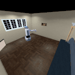
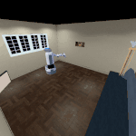

Skills Visualization
Random Skills Visualization
We first examine DUSDi skills by randomly sampling a skill vector z and check if the skill policy induces divers behaviors. Here are some results.
iGibson

DMC-Walker
.gif)
Particle
Disentangled Skills Visualization
However, a more interesting way to visualize DUSDi skills is to randomly perturb a specific skill component/dimension and observe the overall effect on the system's behavior, where we expect only one factor of the environment to change value.
In Particle, perturbing one skill dimension would cause only one particle to shift its interaction with the landmark (in this case the grey agent)
Perturbing another skill dimension causes another agent to drastically shift its interaction with the landmark (in this case the orange agent)
Of course, we can simultaneously perturb two skill dimensions such that two agents react (in this case, the blue and the red agents)
.gif) 

In iGibson (fetch), perturbing one skill dimension causes the robot to change position, while keeping its camera direction and end-effector direction fixed
.gif)
In iGibson (tiago), changing the first skill component causes the left hand wiping region to change (marked by red)
Changing another skill component caused the right arm to shift wiping regions (marked by blue)


Yet another skill component caused the robot to switch position
Experiments
These disentangled skills can then be used as low-level policy in a hierarchical RL setting, achieving significantly superior downstream task learning performance compared to previous state-of-the-art methods. Please checkout our paper and code for a detailed description of our methods and experiments.